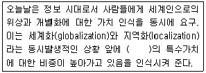
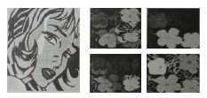
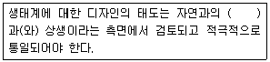
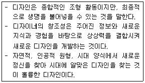
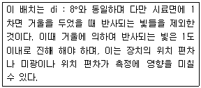
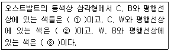

컬러리스트산업기사 (2016-03-06 기출문제)
1과목: 색채심리
1. 빛 자극을 색채로 결정하는 신체 부위는?
- 망막
- 대뇌
- 각막
- 시신경
(정답률: 66%)

2. 색채경험에 대한 설명 중 틀린 것은?
- 빛의 특성이 같더라도 사람의 경험에 따라 다르게 지각된다.
- 일상생활에서 정서적 경험은 색채경험에 영향을 미친다.
- 문화적 배경은 중요한 요인으로 작용하지 않는다.
- 대뇌에서 일어나는 주관적 경험이다.
(정답률: 92%)
3. 색채와 다른 감각과의 교류 현상은?
- 색채의 공감각
- 공통언어
- 색채의 연상
- 시각적 언어
(정답률: 79%)
4. 유행색에 대한 설명으로 틀린 것은?
- 특정지역의 하늘, 자연광, 습도, 흙과 돌 등에 의하여 자연스럽게 어울리고 선호되는 색채들로 구성된다.
- 어떤 계절이나 일정기간 동안 특별히 많은 사람들이 선호하여 착용하는 색이다.
- 일정한 기간을 가지고 주기적으로 반복되는 특성을 가지고 있다.
- 특정한 사회적, 경제적 사건이 있을 경우에는 예외적인 색이 유행할 수도 있다.
(정답률: 75%)
5. 색채선호의 원리에 대한 설명 중 틀린 것은?
- 남성과 여성의 선호색이 다른 경우가 많다.
- 색채 선호도는 세월에 따라 변화한다.
- 제품의 종류에 관계없이 선호색은 적용된다.
- 색채 선호도는 연령에 따라 다르게 나타난다.
(정답률: 94%)
6. 색채선호에 영향을 미치는 요인으로 가장 거리가 먼 것은?
- 지능
- 연령
- 기후
- 소득
(정답률: 72%)
7. 사과라는 대상의 색채를 무의식적으로 추론하여 빨간색이라고 한다. 이처럼 대상의 표면색에 대한 무의식적 추론에 의해 결정되는 색채는?
- 기억색
- 색채 항상성
- 착시
- 색채 주관성
(정답률: 92%)
8. 사회문화정보로서 색이 활용된 예로 프로구단의 상징색은 다음 중 어떤 역할에 가장 크게 기여하였는가?
- 국제적 표준색의 기능
- 사용자의 편의성
- 유대감의 형성과 감정의 고조
- 차별적인 연상효과
(정답률: 84%)
9. SD법에 대한 설명으로 틀린 것은?
- 오스굿(C.E. Osgoods)이 고안했다.
- 연상법과 면접법이 있다.
- 형용사의 척도는 3단계가 일반적이다.
- 개념의 이미지를 측정하여 정서적인 자극을 조사하는 것이다.
(정답률: 67%)
10. 기업색채를 가장 옳게 설명한 것은?
- 기업의 빌딩 외관에 사용한 색채
- 기업 내부의 실내 색채
- 기업의 이미지를 시각적으로 상징화한 색채
- 기업에서 생산된 제품의 색채
(정답률: 91%)
11. 가장 많이 사용되는 조사법으로 표적집단의 선호색, 컬러이미지 등을 조사할 때 주로 사용하는 색채 정보수집 방법은?
- 문헌조사법
- 임의추출법
- 표본조사법
- 현장관찰법
(정답률: 96%)
12. 다음 중 가장 낮은 채도를 사용하는 것이 합리적인 색채계획의 사례는?
- 전통놀이마당 광고 포스터
- 가전제품 중 냉장고
- 여성의 수영복
- 올림픽 스타디움 외관
(정답률: 64%)
13. 서구 사회에서의 패션색채 변천으로 틀린 것은?
- 1940년대 초반에는 군복의 영향으로 검정, 카키, 올리브 등이 사용되었다.
- 1950년대 초에는 전후의 심리적, 경제적 안정으로 명도와 채도가 높은 색채가 유행하였다.
- 1980년대 초에는 재패니즈(japanese look)룩의 영향으로 무채색이 유행하였다.
- 1990년대 초에는 에콜로지와 미니멀리즘의 영향으로 흰색, 카키, 베이지 등 내추럴 색채가 유행하였다.
(정답률: 53%)
14. 위험신호, 소방차 등에 사용된 색은 다음 중 어떠한 효과에 의한 것인가?
- 잔상효과
- 대비효과
- 연상효과
- 동화효과
(정답률: 87%)
15. 실내 벽면의 주조색을 조절하여 사용자가 머무는 시간이 실제보다 짧게 느껴지도록 하려면 어떤 색상을 선택하는 것이 좋은가?
- 황색
- 녹색
- 적색
- 청색
(정답률: 77%)
16. 모리스 데리베레(Maurice Deribere)가 주장한 맛을 대표하는 색채로 틀린 것은?
- 단맛 : pink
- 짠맛 : red
- 신맛 : yellow
- 쓴맛 : brown-maroon
(정답률: 87%)
17. 색이 주는 느낌은 행동 유발과 관계가 있다. 선호색과 성격의 연결중 틀린것은?
- 초록 -희망, 긍정적, 안정적
- 파랑 -합일, 성숙함, 공격적
- 주황 -사교적, 친밀함, 나른함
- 빨강 -자극적, 활동성, 외향적
(정답률: 94%)
18. 황혼일 때, 또는 박명시의 경우 가장 잘 보이는 색은?
- 노랑
- 파랑
- 자주
- 분홍
(정답률: 60%)
19. 군인들이 착용하는 군복색에서 가장 중요하게 고려되어야 할 사항은?
- 연상색
- 기억색
- 은폐색
- 상징색
(정답률: 93%)
20. 백화점 출구에서 20대를 대상으로 하는 새로운 화장품 개발을 위한 조사 시 가장 적합한 표본집단 선정법은?
- 무작위추출법
- 다단추출법
- 국화추출법
- 계통추출법
(정답률: 75%)
2과목: 색채디자인
21. 독일공작연맹에 대한 설명이 틀린 것은?
- 헤르만 무테지우스의 제창으로 건축가, 공업가, 공예가들이 모여 결성된 디자인 진흥 단체이다.
- 우수한 미적 기준을 표준화하여 대량생산하고, 수출을 통해 독일의 국부 증대를 목표로 하였다.
- 질을 추구하면서도 동시에 대량생산에 의한 양을 긍정하여 모던 디자인의 탄생하는 길을 열었다.
- 조형의 추상성과 기하학적 간결한 형태의 경제성에 입각한 디자인을 추구하였다.
(정답률: 43%)
22. 디자인의 조형요소 중 형태의 분류와 거리가 먼 것은?
- 유동 형태
- 순수 형태
- 자연 형태
- 인위적 형태
(정답률: 40%)
23. 일러스트레이션(Illustration)에 관한 설명 중 틀린것은?
- 회화, 사진, 도표, 도형 등 문자이외의 그림요소이다.
- 주제를 명확하게 시각화하는 것이다.
- 커뮤니케이션 언어로서 독자적인 장르이다.
- 출판디자인, 북 디자인이라고도 불린다.
(정답률: 49%)
24. 영국의 공예가로 예술의 민주화, 예술의 생화화를 주장해 근대 디자인의 이념적 기초를 마련한 사람은?
- 찰스 레니 매킨토시
- 윌리엄 모리스
- 허버트 맥네어
- 오브리 비어즐리
(정답률: 83%)
25. 산업디자인진흥법에 의거하여 상품의 외관, 기능, 재료 경제성 등을 종합적으로 심사하여 디자인의 우수성이 인정된 상품에 부여하는 마크는?
- KS Mark
- GD Mark
- Green Mark
- Symbol Mark
(정답률: 70%)
26. 색채계획(Color planning)에 관한 설명으로 틀린 것은?
- 색채의 목표를 달성하기 위해 제품의 특성 및 판매자의 심리를 이용해 효과적으로 색채를 적용하는 과정이다.
- 제품의 차별화, 환경조성, 업무의 향상, 피로의 경감 등의 효과를 위해 절대적으로 필요하다.
- 색채 목적을 정확히 인식하고 시장조사와 색채심리, 색채전달계획을 세워 디자인을 적용해야 한다.
- 시장정보를 충분히 조사하고 분석한 후에 시장 포지셔닝에 의한 색채조절로 고객에게 우호적이고 강력하게 인상을 심어주어야 한다.
(정답률: 53%)
27. 보기의 ( )에 적합한 용어는?

- 전통성
- 문화성
- 지속가능성
- 친자연성
(정답률: 73%)
28. 다음 중에서 디자인의 목적에 해당되지 않는 것은?
- 디자인은 보다 사용하기 쉽고, 편리하며, 아름다운 생활환경을 창조하는 조형행위이다.
- 디자인은 실용적이고 미적인 조형의 형태를 개발하는 것이다.
- 디자인은 아름다움을 추구하기 위하여 즉시적이고 무의식적인 조형의 방법을 개발하고 연구하는 것이다.
- 디자인은 특정 문제에 대한 목적을 마음에 두고, 이의 실천을 위하여 세우는 일련의 행위 개념이다.
(정답률: 76%)
29. 그림과 관련한 디자인 사조에 대한 설명이 틀린 것은?

- 대중을 위한 예술과 소비사회에 대한 비판을 제시
- 기존 회화 양식을 벗어나 상업적인 기법을 사용
- 전체적으로 어두운 톤 위에 혼란한 강조색을 사용
- 옵아트(Optical Art)라고도 함
(정답률: 60%)
30. 여름철 레저, 스포츠 시설물에 대한 색채계획으로 가장 적합한 것은?
- 많은 사람이 이용하기 때문에 일반적으로 선호하는 동일-유사배색을 활용하는 것이 좋다.
- 사고방지를 위해 동화현상의 배색효과를 적극적으로 활용하는 것이 바람직하다 .
- 청결하고 밝은 이미지를 위해 저명도 고채도의 한색계를 적극적으로 활용하는 것이 좋다 .
- 활기차고 밝은 이미지를 위해 대비색에 의한 배색효과를 적극적으로 활용하는 것이 바람직하다 .
(정답률: 56%)
31. 다음 중 색채계획에서 기업색채의 선택 시 주안점으로 틀린 것은 ?
- 기업 이념과 실체에 맞는 이상적 이미지를 나타내는 색
- 눈에 띄기 쉽고 타사와 차별성이 뛰어난 색
- 여러 가지 소재의 재현보다는 관리하기 쉬운 색
- 불쾌감을 주거나 경관을 손상시키지 않고 주위와 조화되는 색
(정답률: 79%)
32. 오스트리아에서 일어난 새로운 조형운동으로 권위적이고 세속적인 과거의 모든 양식으로 부터의 분리를 주장하며 자신들의 작품에 고유 이름을 새겨 넣어 생산된 제품의 품질과 디자인에 신뢰성을 부여한 사조는 ?
- 아트 앤 크래프트
- 아르누보
- 유겐트 스틸
- 시세션
(정답률: 49%)
33. 공업화와 대량생산에 의한 기존의 사회적 환경을 개선하려는 디자인 태도와 관련 있는 디자인은?
- 아이덴티티 디자인(Identity Design)
- 얼터너티브 디자인(Alternative Design)
- 에디토리얼 디자인(Editorial Design)
- 인터페이스 디자인(Interface Design)
(정답률: 46%)
34. 면의 대한 설명으로 틀린 것은?
- 미술, 건축, 디자인에서 면은 형태를 생성하는 중요한 요소이다.
- 면은 공간을 구성하는 단위이며, 공간효과를 나타낸다.
- 길이와 너비의 2차원적 개념으로 정의될 수 있다.
- 면은 움직이는 점에 의해 만들어 진다.
(정답률: 81%)
35. 환경디자인 계획 시 유의점이 아닌 것은?
- 인공시설물의 제외
- 환경색으로서 배경적인 역할의 고려
- 재료의 자연색 존중
- 광선, 온도, 기후 등 조건의 고려
(정답률: 76%)
36. 코카콜라의 빨간색은 다음 중 어느 것의 성공적인 사례인가?
- Illustration
- Pictogram
- C.I.P(Corporation Identity Program)
- M.I(Mind Identity)
(정답률: 81%)
37. 보기의 ( )안에 들어갈 용어로 가장 옳은 것은?

- 융합
- 협조
- 협동
- 공생
(정답률: 75%)
38. 보기에서 공통적으로 설명하는 디자인의 조건은 ?

- 합목적성
- 독창성
- 심미성
- 경제성
(정답률: 64%)
39. 디자인의 합목적성에 관한 내용으로 관계가 가장 적은 것은?
- 실용상의 목적을 가리키는 것이다.
- 객관적, 합리적인 접근이 요구된다.
- 과학적, 공학적 기초가 필요하다.
- 토속적, 관습적 접근이 필요하다.
(정답률: 57%)
40. 캘리그라피(calligraphy)에 관한 설명 중 틀린 것은?
- P.술라주, H.아르퉁, J.폴록 등 1950년대 표현주의 화가들에게서 캘리그라피를 이용한 추상화가 성행하였다.
- 글자 자체의 독특한 번짐, 살짝 스쳐 가는 효과 여백의 균형미 등 순수 조형의 관점에서 보는 것을 뜻한다.
- 미국의 타이포그래퍼인 허브 루발린(Herb Lubalin)에 의해 창시되었다.
- 필기체, 필적,서법 등의 뜻으로, 좁게는 서예를 말하며 넓게는 활자 이외의 서체(書體)를 뜻하는 말이다.
(정답률: 45%)
3과목: 섹채관리
41. 다음 중 색을 육안으로 비교하여 판정할 때 기준이 되는 광원으로 가장 적당한 것은?
- A 광원
- D65 광원
- CWF 광원
- B 광원
(정답률: 71%)
42. 일반적인 인쇄잉크의 기본색이 아닌 것은?
- red
- yellow
- magenta
- cyan
(정답률: 85%)
43. CCM(Computer Color Matching system)의 성능에 대하여 옳게 설명한 것은?
- 기준색에 대한 분광반사율 차이를 최소화 한다.
- 조건등색 현상이 항상 발생한다.
- 표준광 D65 조명 아래서 색채가 일치하는 것을 기준으로 처방을 산출한다.
- 고비용으로 경제성이 없다.
(정답률: 38%)
44. 분광복사계(spectroradiometer)를 이용하여 모니터의 휘도를 측정하였다. 측정된 데이터의 단위로 옳은 것은?
- cd/m2
- 단위없음
- lx
- Watt
(정답률: 70%)
45. 조색 시 주의사항이 아닌 것은?
- 색상의 방향이 달라지지 않도록 소량씩 첨가하여 조색한다.
- 조색제는 4.5가지 이내의 색을 사용해서 채도가 떨어지는 것을 방지한다.
- 고채도를 얻기 위해서는 대비색을 사용한다.
- 조색 시, 착색 후 색상의 변화를 감안하여 혼합한다.
(정답률: 62%)
46. 측색의 오차판정 중 기준색과 변화색을 놓고 색상, 채도의 변화를 파악하여 어는 쪽으로 변화되었는지를 판단하는 방법은?
- 광원판정
- 편색판정
- 메타메리즘 판정
- 컬러어피어런스 판정
(정답률: 45%)
47. 인류에서 알려진 오래된 염료 중의 하나로 벵갈, 자바등 아시아 여러 곳에서 자라는 토종식물에서 얻어지며 우리에게 청바지의 색깔로 잘 알려져 있는 천연염료는?
- 인디고
- 플라본
- 모브
- 모베인
(정답률: 85%)
48. 색체계를 사용하여 측정된 색채값이 실제로 눈에 보이는 색채와 차이가 있는 것의 원인으로 거리가 먼 것은?
- 표면 반사 성분
- 음영
- 투명성
- 물체의 강도
(정답률: 66%)
49. 도료에 대한 설명이 틀린 것은?
- 유성페인트, 유성에나멜, 주정도료는 대표적인 천연수지 도료이다.
- 합성수지 도료는 화기에 민감하고 광택을 얻기 힘든 결점이 있다.
- 에멀션 도료와 수용성 베이킹수지 도료는 대표적인 수성도료이다.
- 플라스티졸 도료는 가소제에 희석제를 혼합한 것을 뜻한다.
(정답률: 23%)
50. 디지털색채에 관한설명 중옳은 것은?
- 아날로그 방식이란 데이터를 0과 1의 두 가지 상태로만 생성, 저장, 처리, 출력 전송하는 전자기술이다.
- 디지털 방식은 전류, 전압 등과 같이 물리량을 이용하여 어떤 값을 표현하거나 측정하는 것이다.
- 디지털 색채는 물감, 파스텔, 염료 등 물리적 또는 화학적으로 활용하여 색을 구사하는 방식이다.
- 디지털 색채는 크게 RGB를 이용한 색채 영상을 디스플레이하는 것과 CMYK를 이용하여 프린튼 하는 두가지 있다.
(정답률: 74%)
51. 기기 종속적(device-dependent)인 색공간 즉, 영상 장치에 따라 눈에 인지되는 색이 변화하는 색공간이 아닌 것은?
- CIELAB
- RGB
- YCbCr
- HSV
(정답률: 32%)
52. 조건등색(metamerism)에 대한 설명 중 옳은 것은?
- 조명에 따라 두 견본이 같게도 다르게도 보인다.
- 모니터에서 색 재현과는 관계없다.
- 사람의 시감 특성과는 관련 없다.
- 분광 반사율이 같은 두 견본도 다르게 보일 수 있다.
(정답률: 56%)
53. 인쇄에 따른 환경오염을 줄이기 위해 고안된 잉크는?
- 형광잉크
- 히트세트잉크
- 수성 그라비어잉크
- 금은잉크
(정답률: 64%)
54. 육안으로 색채일치를 확인하기 위하여 필요한 장치는?
- 색채관측상자
- 회전 혼색판
- Munsell color book과 크세논등
- monochromator(단색화장치)
(정답률: 69%)
55. 보기에서 설명하는 조명 및 수광의 기하학적 조건은?

- 확산:8도배열,정반사 성분포함 (di : 8°)
- 확산:8도배열,정반사 성분제외 (de : 8°)
- 8도 : 확산배열, 정반사 성분 포함 (8° : di)
- 8도 : 확산배열, 정반사 성분 제외 (8° : de)
(정답률: 40%)
56. PNG 파일 포맷에 대한 설명으로 옳은 것은?
- 압축률은 떨어지지만 전송속도가 빠르고 이미지의 손상은 적으며 간단한 애니메이션 효과를 낼 수 있다.
- 알파채널, 트루컬러 지원, 비손실 압축을 사용하여 이미지 변형 없이 웹상에 그대로 표현이 가능하다.
- 매킨토시의 표준파일 포맷방식으로 비트맵, 벡터 이미지를 동시에 다룰 수 있다.
- 1600만 색상을 표시할 수 있고 손실압축방식으로 파일의 크기가 작기 때문에 웹에서 널리 사용된다.
(정답률: 65%)
57. 다음 중 평판인쇄용 잉크는?
- 오프셋윤전잉크
- 플렉소인쇄잉크
- 등사판잉크
- 레지스터잉크
(정답률: 60%)
58. 육안조색 시 필요한 조건이 아닌 것은?
- 색채 관측을 할 때에는 조명 환경, 빛의 방향, 조명의 세기 등을 사전에 검토한다.
- 일반적으로 이용하는 부스의 내부는 명도 L*가 약 45.55의 무광택의 무채색으로 한다.
- 작업면에서의 조도는 약 100lx가 가장 적당하다.
- 작업면의 색은 원칙적으로 무광택이며, 명도 L*가 50인 무채색이다.
(정답률: 60%)
59. 한국산업표준(KS) 중 물체색의 색이름을 규정한 KS 규격은?
- KS A 0011
- KS A 0062
- KS A 3012
- KS C 8008
(정답률: 59%)
60. 육안검색에 의한 색채판별조건에 대한 설명으로 옳은 것은?
- 관찰자와 대상물의 각도는 30도로 한다.
- 비교하는 색은 인접하여 배열하고 동일 평면으로 배열되도록 배치한다.
- 관측조도는 300 lx로 한다.
- 대상물의 색상과 비슷한 색상을 바탕면색으로 하여 관측한다.
(정답률: 77%)
4과목: 색채지각의이해
61. 주목성에대한 설명중 틀린것은?
- 위험표지나 공사장 표시 등에 쓰인다.
- 일반적으로 고채도보다 저채도 색의 주목성이 높다.
- 색자체가 주목성이 높더라도 배경색에 따라 눈에 띄지않을 수도있다.
- 일반적으로 난색이 한색보다 주목성이 높다.
(정답률: 85%)
62. 푸르킨예 현상에 대한 설명으로 틀린 것은?
- 간상체 시각은 단파장에 민감하다.
- 암순응이 되기 전에는 빨간색이 파란색에 비해 잘 보인다.
- 추상체 시각은 장파장에 민감하다.
- 암순응이 되면 상대적으로 빨간색이 더 잘 보인다.
(정답률: 74%)
63. 색의 감정효과로 온도감이 가장 높은 색은?
- 5B 6/10
- 2.5G 5/6
- 7.5YR 5/10
- N9
(정답률: 78%)
64. 가법혼색의 법칙을 따르는 것이 아닌 것은?
- 병치혼합
- 회전혼합
- 중간혼합
- 색료혼합
(정답률: 64%)
65. 동일한 회색이 노란색 바탕과 파란색 바탕위에 동시에 놓여 있을 경우 노란색 바탕위의 회색은 어떻게 보이는가?
- 노란 회색
- 하양 회색
- 짙은 회색
- 파란 회색
(정답률: 37%)
66. 다음중 같은크기,같은 거리에서관찰할 경우가장 후퇴해 보이는 색은?
- 노란 회색
- 하양 회색
- 짙은 회색
- 파란 회색
(정답률: 63%)
67. 보색에대한 설명중 틀린것은?
- 모든 2차색은 그 색에 포함되지 않는 원색과 보색관계에 있다.
- 보색 중에서 회전혼색의 결과 무채색이 되는 보색을 특히 심리보색이라 한다.
- 보색관계에 있는 두 색광의 혼합결과는 백색광이 된다.
- 색상환에서 보색이 되는 두 색을 이웃하여 놓았을 때 보색대비 효과가 나타난다.
(정답률: 46%)
68. 인간이 외부환경으로부터 얻는 여러 가지 정보 중에서 색채를 파악하는 것은?
- 색채순응
- 색채지각
- 색채조절
- 색각이상
(정답률: 79%)
69. 시세포 중 물체의 밝고 어두운 정도를 구별하는 것은?
- 추상체
- 간상체
- 홍체
- 수정체
(정답률: 75%)
70. 색채의 진출과 후퇴에 대한 설명으로 틀린 것은?
- 색채의 진출성과 후퇴성에 대한 심리적 반응의 결과이다.
- 공간이 색채로 인해 넓어 보이거나 좁아 보일 수는 없다.
- 진출색과 후퇴색은 색채의 팽창, 수축성과 관계가 있다.
- 따뜻한 색이 차가운 색 보다 더 진출하는 느낌을 준다.
(정답률: 80%)
71. 감법혼색에 대한 설명 중 틀린 것은?
- 물감, 안료의 혼합이다.
- 시안과 노랑을 혼합하면 녹색이 된다.
- 혼합색이 원래의 색보다 명도는 낮고, 채도는 변하지 않는다.
- 감법혼합의 3원색은 Cyan, Magenta, Yellow이다.
(정답률: 72%)
72. 다음 중 Magenta와 Yellow의 감법혼합으로 얻어지는 색은?
- Red
- Green
- Blue
- Cyan
(정답률: 67%)
73. 빛 자극이 사라진 후에도 얼마동안 망막에 시 자극이 남아 있는 현상은?
- 수축
- 대비
- 동화
- 잔상
(정답률: 86%)
74. 태양광선을 프리즘에 통과시키면 장파장에서 단파장까지 색이 구분된다. 다음 중 장파장에 해당되며 가장 적게 굴절 되는 색은?
- 빨강
- 노랑
- 파랑
- 보라
(정답률: 78%)
75. 빨간색 원을보다가 흰벽을 보면청록색 원이보이는 현상은?
- 페흐너 효과
- 색채의 항상성
- 음성 잔상
- 양성 잔상
(정답률: 75%)
76. 회전혼합에 대한 설명으로 틀린 것은?
- 혼합된 색의 명도는 혼합하려는 색들의 중간명도가 된다.
- 혼합된 색상은 중간색상이 되며, 면적에 따라 다르다.
- 보색 관계 색상의 혼합은 중간명도의 회색이 된다.
- 혼합된 색의 채도는 원래의 채도보다 높아진다.
(정답률: 66%)
77. 다음 중명시성이 가장높은 것은?
- 흰색바탕-노랑
- 회색바탕-파랑
- 검정바탕-파랑
- 검정바탕-노랑
(정답률: 78%)
78. 동시대비에 대한 설명이 틀린 것은?
- 자극과 자극의 거리가 멀어지면 대비현상은 약해진다.
- 시선을 한 곳에 집중시키려는 색채지각 과정에서 일어나는 현상이다.
- 색 차이가 클수록 대비현상이 약해진다.
- 계속 한 곳을 보면 눈의 피로로 인해 대비효과는 감소된다.
(정답률: 80%)
79. 대낮에 하늘이 파랗게 보이는 것은 빛의 어떤 현상에 의한 것인가?
- 굴절
- 회절
- 산란
- 간섭
(정답률: 75%)
80. 동화 효과와 관련이 없는 것은?
- 베졸드 효과
- 줄눈 효과
- 음성 잔상
- 전파 효과
(정답률: 60%)
5과목: 색채체계의이해
81. ISCC-NIST에 대한 설명 중 틀린 것은?
- 기본색이름에 각 형용사를 붙여 267개의 색이름 범위로 표현한다.
- 유채색과 무채색에 공통적으로 사용되는 톤의 수식어는 light와 dark 이다.
- 무채색은 white, light gray, medium gray, dark gray black으로 구성된다.
- ISCC-NIST는 violet 색상을 세 종류로 세분화하고 있다.
(정답률: 49%)
82. NCS 색체계에 대한 설명으로 틀린 것은?
- NCS 색삼각형은 오스트발트 시스템과 같이 사선배치 모양으로 구성되어 있다.
- Y, R, B, G을 기본으로 40색상환을 구성한다.
- 명도와 채도를 통합한 tone의 개념, 즉 뉘앙스(nuance)로 색을 표시한다.
- 하양의 표기방법은 9000-N으로, 하양색도 90% 순색도 0%이다.
(정답률: 60%)
83. 오스트발트 색체계 기호표시인 '17 nc '의 설명으로 옳은 것은?
- 17은 색상, n은 명도, c는 채도
- 17은 백색량, n은 흑색량, c는 순색량
- 17은 색상, n은 백색량, c는 흑색량
- 17은 색상, n은 흑색량, c는 흑색량
(정답률: 53%)
84. 관용색이름에 대한 설명이 틀린 것은?
- 옛날부터 사용해온 고유색 이름명이다.
- 광물의 이름에서 유래된 것도 있다.
- 인명, 지명에서 유래된 것도 있다.
- 연한 파랑, 밝은 남색 등이 있다.
(정답률: 75%)
85. 톤은 같지만 색상이 다른 배색은?
- 톤온톤 배색
- 톤인톤 배색
- 세퍼레이션 배색
- 그라데이션 배색
(정답률: 64%)
86. 색채 배색에 대한 설명으로 틀린 것은?
- 동일한 화면 내에 소구력이 같은 대비색이 두 쌍이면 혼란을 초래한다.
- 고명도의 색은 전체적으로 경쾌한 인상을 준다.
- 채도대비, 명도대비, 보색대비 순서로 강한 주목성을 지닌다.
- 난색의 넓은 면적은 따뜻한 인상을 준다.
(정답률: 75%)
87. 일상생활에서 볼 수 있는 연속배색의 예로 적합하지 않은 것은?
- 카메로(조개껍질 세공)의 절단면
- 무지개의 색
- 스펙트럼의 배열
- 색상환의 배열
(정답률: 65%)
88. 색체계에서 관한 설명으로 틀린 것은?
- 색체계는 색을 전달하기 위한 방법이다.
- 색을 기호화하면 정확하게 정보로 저장할 수 있다.
- 색체계만으로는 색의 재생, 활용이 용이하지 않다.
- 먼셀, 오스트발트, NCS, CIE, 색체계 등이 있다.
(정답률: 77%)
89. P.C.C.S 색체계의 명도에 대한 설명 중 틀린 것은?
- 명도의 표준은 하양과 검정과의 사이를 지각적으로 등보도가 되도록 분할한다.
- 실제 사용되는 최고 명도 치는 도료를 기준으로 설정한 것이 특징이다.
- 명도기호는 유광택 도료인 경우 백색은 9.5, 흑색은 0.5이다.
- 원래의 명도 기준인 0, 10 등의 절대치 기호가 없다.
(정답률: 35%)
90. 색채 표준화의 조건으로 옳지 않은 것은?
- 색상, 명도, 채도만을 사용한다.
- 색채간의 지각적 등보성이 있어야 한다.
- 색채 표기가 국제기호에 준해야 한다.
- 실용화가 용이해야 한다.
(정답률: 55%)
91. 다음 중 파란색을 가장 많이 포함하고 있는 것은?
- L* = 45, a* = 40, b* = 0
- L* = 70, c* = 15, h* = 270
- L* = 35, a* = -40, b* = 15
- L* = 70, c* = 25, h* = 90
(정답률: 65%)
92. 먼셀 색체계의 설명으로 틀린 것은?
- 먼셀의 색체 체계는 색상, 명도, 채도의 3속성을 근거로 작성되었다.
- 색상은 색상 기호 없이 수치로도 기록되며, 색상기호 앞에 5가 붙으면 대표 색상이다.
- 채도의 숫자는 색상이나 명도에 따라 다르게 되며, 빨강 순색(명도 =4)은 14단계이다.
- 헤링의 이론을 바탕으로 색상을 주파장으로 정의하고, 24색상으로 분할하여 색상환을 구성하였다.
(정답률: 45%)
93. 먼셀의 균형이론에 영향을 받은 색채 조화론은?
- 슈브롤의 조화론
- 문-스펜서 조화론
- 파버 비렌의 조화론
- 져드의 조화론
(정답률: 58%)
94. 보기의 ( )에 들어갈 단어를 순서대로 옳게 나열한 것은?

- 등백계열, 등흑계열, 등순계열
- 등흑계열, 등가색환 계열, 등백계열
- 등백계열, 등흑계열, 등가색환 계열
- 등흑계열, 등백계열, 등순계열
(정답률: 59%)
95. 다음 중 관용색명이 아닌 것은?
- Prussian Blue
- Peacock Blue
- Grayish Blue
- Beige
(정답률: 64%)
96. P.C.C.S의 톤 분류가 아닌 것은?
- strong
- dark
- tint
- grayish
(정답률: 68%)
97. 오방색과 상징의 연결이 틀린 것은?
- 황색 -흙, 가을
- 청색 -나무, 봄
- 적색 -불, 여름
- 흑색 -물, 겨울
(정답률: 30%)
98. 다음 중 관용색이름인 와인레드(wine red)를 나타내며 가장 가까운 L*a*b* 값은?
- L*a*b* = 20.01, 37.78, 8.85
- L*a*b* = 90.14, 5.26, 2.02
- L*a*b* = 20.12, 19.76, -0.71
- L*a*b* = 20.18, 14.68, -13.66
(정답률: 49%)
99. 먼셀의 명도의 범위는?
- 0.9
- 0.10
- 0.15
- 0.16
(정답률: 47%)
100. 현색계가 아닌 색체계는?
- Munsell
- CIE
- DIN
- NCS
(정답률: 60%)